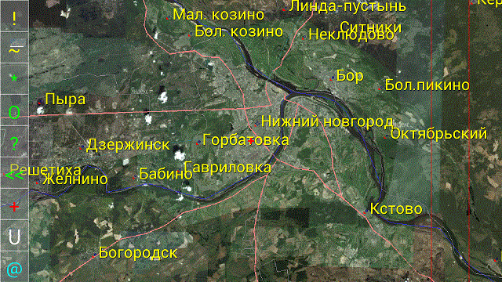

|
Справка по программе Geo.Log |
|
Основное окно показывает карту в зависимости от настроек отображения. Настройки позволяют комбинировать несколько источников карт (растровые, векторные) в один вид.  1. Правая – область навигации. В режиме «по умолчанию» данная область содержит две красные линии. Зона между первой и второй линиями служит для изменения масштаба изображения. Зона после второй — для поворота. Зона до первой линии — для перемещения изображения. В режиме «стрелки» область навигации содержит кнопки со стрелками для соответсвующих действий. 2. Левая область – область кнопок управления: “!” - кнопка обновления. Эта кнопка вызывает непосредственную перерисовку карты. “~” - кнопка настроек отображения. Открывает экран с различными настройками вида карты. “*” - “мои места”. Кнопка открывает экран со списком мест на карте, которые отобрал пользователь как часто посещаемые. “O” - “мои объекты”. Кнопка открывает экран со списком мобильных объектов, за которыми часто наблюдает пользователь. “?” - кнопка поиска объектов карты по имени. “<<” - “иди назад”. Кнопка показывает предыдущее место на карте. “+” - кнопка графического редактора. Открывает экран с текущей картой для редактирования её пользователем. Он может делать надписи и рисунки на ней, которые станут доступные для других пользователей. “C” - “чат”. Кнопка открывает экран для обмена сообщениями с другим пользователем в сети. “@” - “трекер”. Кнопка открывает экран с параметрами трекера, такими как: текущее состояние, GPS местоположение, скорость и т.д. Экран содержит также элементы управления («Тревожная кнопка», кнопка создания точек интереса (POI) и т.д.). © 2013 geo-log.googlecode.com |